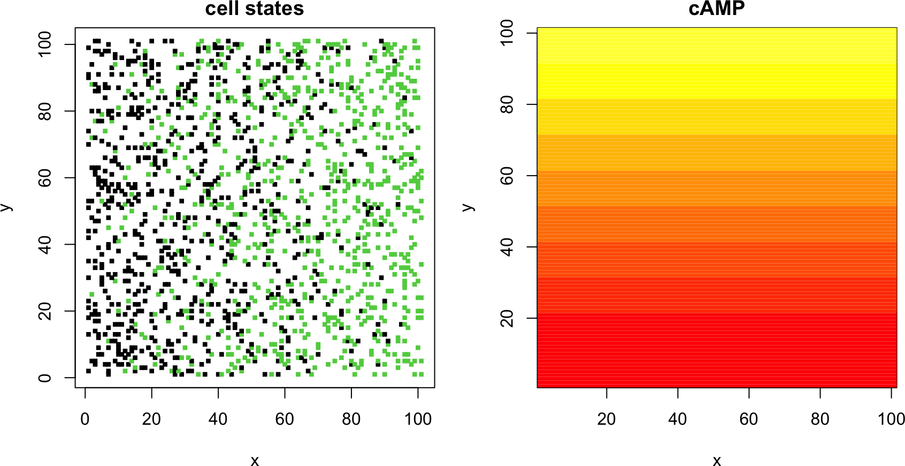
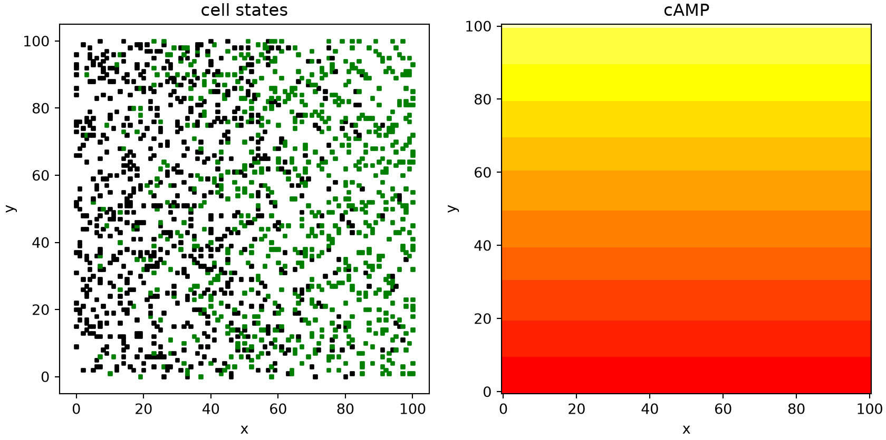
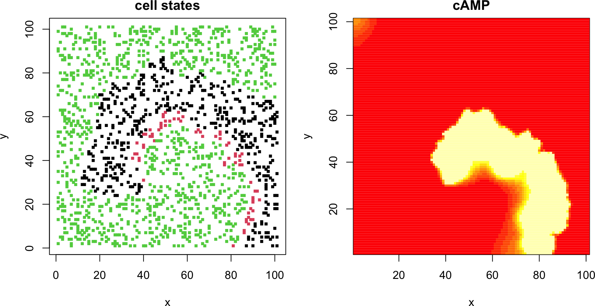
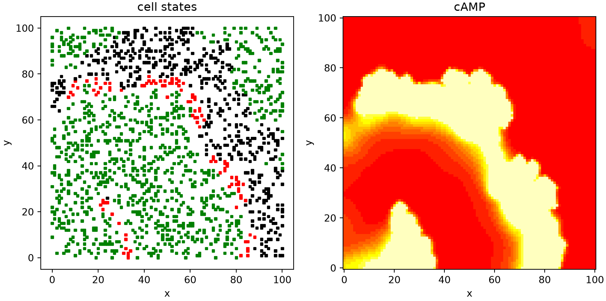
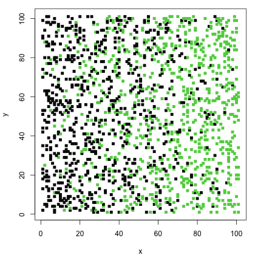
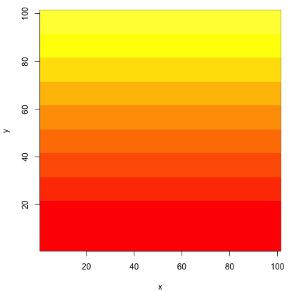

# place cells at random lattice points; set the initial cAMP gradient and cell states
init_cells <- function(n, ncell, p, t_r) {
ind <- sort(sample(n * n, ncell)) # random linear grid indices
ind_x <- (ind - 1) %% n + 1 # grid coordinates of each cell
ind_y <- (ind - 1) %/% n + 1
con <- matrix(seq(0, 2, length.out = n), n, n, byrow = TRUE) # linear cAMP gradient
states <- rep(1L, ncell); clocks <- numeric(ncell)
refr <- runif(ncell) < ind_x / n * p # seed refractory cells along one axis
states[refr] <- 3L; clocks[refr] <- t_r
list(states = states, ind_x = ind_x, ind_y = ind_y, con = con, clocks = clocks)
}
# model parameters
n <- 101; rho <- 0.15; con_t <- 1; dc <- 300; k <- 0.5
t_e <- 2; t_r <- 20; p <- 1; t_total <- 150; dt <- 0.01; nframe <- 151
heat <- heat.colors(11); brk <- c(seq(0, 2, 0.2), 100) # yellow = high cAMP, red = low
set.seed(1)
ncell <- as.integer(n * n * rho)
dat <- init_cells(n, ncell, p, t_r)7D. Pattern formation in Dictyostelium
The finite-difference machinery of Part 7A also drives a very different kind of model, in which a continuous chemical field is coupled to discrete, excitable cells. The social amoeba Dictyostelium discoideum aggregates by relaying pulses of cyclic AMP (cAMP), and the relayed pulses organize into rotating spiral waves. Here we reproduce that pattern with the model of Kessler and Levine (Kessler and Levine 1993), who represent the cells as discrete excitable entities (they call them bions) sitting on a lattice through which cAMP diffuses.
The model has two coupled parts. The cAMP concentration \(c(X, Y, t)\) is a single continuous field on a two-dimensional lattice, and it obeys a reaction-diffusion equation,
\[ \frac{\partial c}{\partial t} = a^2 \left( \frac{\partial^2 c}{\partial X^2} + \frac{\partial^2 c}{\partial Y^2} \right) - k c + s(X, Y, t) , \tag{1} \]
where \(a\) is the lattice spacing, \(k\) the cAMP degradation rate, and \(s\) the cAMP secreted by cells. On top of this field sit the cells, placed at random lattice points with density \(\rho\). Each cell is an excitable element that cycles through three states:
- inactive (state 1): the resting state; the cell waits here until the local cAMP rises above a threshold \(c_T\);
- excited (state 2): once \(c > c_T\), the cell fires, secreting cAMP at rate \(\Delta c / t_e\) for a fixed excitation time \(t_e\);
- refractory (state 3): after firing, the cell cannot respond for a recovery time \(t_r\), after which it returns to inactive.
The firing cells are the source term \(s\) in Equation (1), so an excited cell raises the cAMP of its neighbors, which can push them over threshold in turn. This relay is what propagates a wave.
We discretize Equation (1) exactly as in Part 7A, but now in two dimensions. With lattice spacing \(a = \Delta X = 1\), the centered second difference gives the five-point Laplacian,
\[ \nabla^2 c \approx c_{i+1,j} + c_{i-1,j} + c_{i,j+1} + c_{i,j-1} - 4 c_{i,j} , \tag{2} \]
and we impose a no-flux (Neumann) boundary by copying each edge value from its inward neighbor, so that no cAMP leaves the domain.
7D.1 Model setup
We place ncell cells at random on an \(n \times n\) lattice and give cAMP an initial linear gradient (from 0 to 2, mean 1) across the lattice in one direction. The fraction of cells that start in the refractory state rises linearly in the perpendicular direction. This offset between the chemical gradient and the refractory gradient breaks the symmetry and seeds a single rotating spiral rather than concentric target waves.
R implementation
par(mfrow = c(1, 2), pty = "s", mar = c(4, 4, 2, 1))
# cells (black = inactive, green = refractory) and the initial cAMP gradient
plot(dat$ind_x, dat$ind_y, col = dat$states, pch = 15, cex = 0.6,
xlab = "x", ylab = "y", main = "cell states")
image(1:n, 1:n, dat$con, col = heat, breaks = brk, xlab = "x", ylab = "y", main = "cAMP")
Python implementation
import numpy as np
import matplotlib.pyplot as plt
from matplotlib.colors import ListedColormap, BoundaryNorm
# discrete heat palette matching R's heat.colors(11): red (low) to yellow (high)
HEAT = ["#FF0000", "#FF2000", "#FF4000", "#FF6000", "#FF8000", "#FF9F00",
"#FFBF00", "#FFDF00", "#FFFF00", "#FFFF40", "#FFFFBF"]
BRK = list(np.arange(0, 2.01, 0.2)) + [100]
CMAP = ListedColormap(HEAT); NORM = BoundaryNorm(BRK, CMAP.N)
COL = np.array(["black", "red", "green"]) # inactive, excited, refractory
# place cells at random lattice points; set the initial cAMP gradient and cell states
def init_cells(n, ncell, p, t_r, rng):
ind = np.sort(rng.choice(n * n, ncell, replace=False)) # random linear grid indices
ind_x = ind % n; ind_y = ind // n # grid coordinates of each cell
con = np.tile(np.linspace(0, 2, n), (n, 1)) # linear cAMP gradient
states = np.ones(ncell, dtype=int); clocks = np.zeros(ncell)
refr = rng.random(ncell) < ind_x / n * p # seed refractory cells along one axis
states[refr] = 3; clocks[refr] = t_r
return dict(states=states, ind_x=ind_x, ind_y=ind_y, con=con, clocks=clocks)
# model parameters
n = 101; rho = 0.15; con_t = 1; dc = 300; k = 0.5
t_e = 2; t_r = 20; p = 1; t_total = 150; dt = 0.01; nframe = 151
rng = np.random.default_rng(1)
ncell = int(n * n * rho)
dat = init_cells(n, ncell, p, t_r, rng)fig, ax = plt.subplots(1, 2, figsize=(9, 4.8))
# cells (black = inactive, green = refractory) and the initial cAMP gradient
ax[0].scatter(dat["ind_x"], dat["ind_y"], c=COL[dat["states"] - 1], s=6, marker="s")
ax[0].set(xlabel="x", ylabel="y", title="cell states", aspect="equal")
ax[1].imshow(dat["con"].T, origin="lower", cmap=CMAP, norm=NORM, aspect="equal")
ax[1].set(xlabel="x", ylabel="y", title="cAMP")
plt.tight_layout(); plt.show()
The left panel shows the cells, colored black for inactive and green for refractory (no cell is excited yet); the right panel shows the smooth initial cAMP gradient. Because R and Python draw independent random cell placements, the two starting configurations differ in detail while sharing the same statistics.
7D.2 Simulation
Each time step does two things: it advances every cell through the state machine described above, then updates the cAMP field with one explicit finite-difference step of Equation (1), adding the secreted cAMP at the location of every excited cell. We write the cell update as vectorized operations over all cells at once, which keeps the R and Python versions identical in structure and fast enough to run the full simulation inline.
NoteRecipe 7D.2.1
Objective. Simulate spiral cAMP waves in a Dictyostelium colony of excitable cells.
Model. The Kessler-Levine model: a cAMP field dc/dt = a^2*(d2c/dX2 + d2c/dY2) - k*c + s, coupled to discrete cells that cycle inactive -> excited (firing and secreting when local c > c_T) -> refractory -> inactive.
Method. A 2D finite-difference integrator with no-flux boundaries for the cAMP field, coupled each step to a vectorized cell state-machine update.
Test. A 101x101 grid, cell fraction 0.15, threshold c_T = 1, secretion dc = 300 over t_e = 2, recovery t_r = 20, degradation k = 0.5, dt = 0.01, to t = 150.
Show. A snapshot of the 2D cAMP field with the rotating spiral wave and the cell states.
Verification. The coupled field and excitable cells self-organize into a rotating cAMP spiral wave, with excited cells riding the high-cAMP crest.
R implementation
# advance all cells one step through the inactive -> excited -> refractory cycle
update_states <- function(dat, con_t, t_e, t_r, dt) {
s <- dat$states; clk <- dat$clocks
con_cell <- dat$con[cbind(dat$ind_x, dat$ind_y)] # local cAMP at each cell
fire <- s == 1L & con_cell >= con_t # inactive -> excited (over threshold)
ex_done <- s == 2L & clk < dt # excited -> refractory (excitation over)
rf_done <- s == 3L & clk < dt # refractory -> inactive (recovered)
tick <- (s == 2L | s == 3L) & clk >= dt # otherwise keep counting down
clk[tick] <- clk[tick] - dt
s[fire] <- 2L; clk[fire] <- t_e
s[ex_done] <- 3L; clk[ex_done] <- t_r
s[rf_done] <- 1L; clk[rf_done] <- 0
dat$states <- s; dat$clocks <- clk
dat
}
# run the coupled cell + cAMP model, saving nframe snapshots
dicty_modeling <- function(dat, n, con_t, dc, k, t_e, t_r, t_total, dt, nframe) {
nt <- as.integer(t_total / dt); rate_c <- dc / t_e
save_every <- as.integer(nt / (nframe - 1)); ncell <- length(dat$states)
states_all <- matrix(0L, nframe, ncell)
con_all <- array(0, c(nframe, n, n))
states_all[1, ] <- dat$states; con_all[1, , ] <- dat$con
l <- 1
for (step in seq_len(nt)) {
dat <- update_states(dat, con_t, t_e, t_r, dt)
con <- dat$con
c_xp <- rbind(con[-1, ], con[n, ]); c_xm <- rbind(con[1, ], con[-n, ]) # no-flux BC
c_yp <- cbind(con[, -1], con[, n]); c_ym <- cbind(con[, 1], con[, -n])
dcdt <- (c_xp + c_xm + c_yp + c_ym - 4 * con) - k * con # diffusion - degradation
ex <- dat$states == 2L # excited cells secrete cAMP
if (any(ex)) dcdt[cbind(dat$ind_x[ex], dat$ind_y[ex])] <-
dcdt[cbind(dat$ind_x[ex], dat$ind_y[ex])] + rate_c
dat$con <- con + dcdt * dt
if (step %% save_every == 0) {
l <- l + 1; states_all[l, ] <- dat$states; con_all[l, , ] <- dat$con
}
}
list(states = states_all, con = con_all, ind_x = dat$ind_x, ind_y = dat$ind_y)
}
res <- dicty_modeling(dat, n, con_t, dc, k, t_e, t_r, t_total, dt, nframe)par(mfrow = c(1, 2), pty = "s", mar = c(4, 4, 2, 1))
frame <- 80 # a snapshot partway through
plot(res$ind_x, res$ind_y, col = res$states[frame, ], pch = 15, cex = 0.6,
xlab = "x", ylab = "y", main = "cell states")
image(1:n, 1:n, res$con[frame, , ], col = heat, breaks = brk,
xlab = "x", ylab = "y", main = "cAMP")
Python implementation
# advance all cells one step through the inactive -> excited -> refractory cycle
def update_states(dat, con_t, t_e, t_r, dt):
s = dat["states"]; clk = dat["clocks"]
con_cell = dat["con"][dat["ind_x"], dat["ind_y"]] # local cAMP at each cell
fire = (s == 1) & (con_cell >= con_t) # inactive -> excited (over threshold)
ex_done = (s == 2) & (clk < dt) # excited -> refractory (excitation over)
rf_done = (s == 3) & (clk < dt) # refractory -> inactive (recovered)
tick = ((s == 2) | (s == 3)) & (clk >= dt) # otherwise keep counting down
clk[tick] -= dt
s[fire] = 2; clk[fire] = t_e
s[ex_done] = 3; clk[ex_done] = t_r
s[rf_done] = 1; clk[rf_done] = 0
return dat
# run the coupled cell + cAMP model, saving nframe snapshots
def dicty_modeling(dat, n, con_t, dc, k, t_e, t_r, t_total, dt, nframe):
nt = int(t_total / dt); rate_c = dc / t_e
save_every = nt // (nframe - 1); ncell = len(dat["states"])
states_all = np.zeros((nframe, ncell), dtype=int)
con_all = np.zeros((nframe, n, n))
states_all[0] = dat["states"]; con_all[0] = dat["con"]
l = 0
for step in range(1, nt + 1):
dat = update_states(dat, con_t, t_e, t_r, dt)
con = dat["con"]
c_xp = np.vstack([con[1:], con[-1:]]); c_xm = np.vstack([con[:1], con[:-1]]) # no-flux BC
c_yp = np.hstack([con[:, 1:], con[:, -1:]]); c_ym = np.hstack([con[:, :1], con[:, :-1]])
dcdt = (c_xp + c_xm + c_yp + c_ym - 4 * con) - k * con # diffusion - degradation
ex = dat["states"] == 2 # excited cells secrete cAMP
np.add.at(dcdt, (dat["ind_x"][ex], dat["ind_y"][ex]), rate_c)
dat["con"] = con + dcdt * dt
if step % save_every == 0:
l += 1; states_all[l] = dat["states"]; con_all[l] = dat["con"]
return dict(states=states_all, con=con_all, ind_x=dat["ind_x"], ind_y=dat["ind_y"])
res = dicty_modeling(dat, n, con_t, dc, k, t_e, t_r, t_total, dt, nframe)fig, ax = plt.subplots(1, 2, figsize=(9, 4.8))
frame = 79 # a snapshot partway through
ax[0].scatter(res["ind_x"], res["ind_y"], c=COL[res["states"][frame] - 1], s=6, marker="s")
ax[0].set(xlabel="x", ylabel="y", title="cell states", aspect="equal")
ax[1].imshow(res["con"][frame].T, origin="lower", cmap=CMAP, norm=NORM, aspect="equal")
ax[1].set(xlabel="x", ylabel="y", title="cAMP")
plt.tight_layout(); plt.show()
Partway through the run, both the cells and the cAMP field have organized into a rotating spiral. In the cAMP panel the bright band (high cAMP) is the wave crest; in the cell panel the excited cells (red) sit on that crest, trailed by a band of refractory cells (green), with inactive cells (black) waiting ahead of the front. The spiral rotates around the point where the chemical and refractory gradients cross. As before, R and Python evolve independent random realizations, so each produces its own spiral of the same character rather than an identical picture.
7D.3 Animation
A single snapshot only hints at the dynamics. To watch the spiral rotate, we render every saved frame to a PNG and assemble the frames into an animated GIF. In R we use magick (the same ImageMagick tool used elsewhere in the book), and in Python matplotlib.animation. The animation code below is shown as a listing you can run; the resulting GIFs are pre-generated and embedded so the book does not rebuild them on every render.
R implementation
library(magick)
# cell-state animation
for (i in seq_len(nframe)) {
png(sprintf("state_%04d.png", i), width = 480, height = 480)
par(mar = c(4, 4, 1, 1))
plot(res$ind_x, res$ind_y, col = res$states[i, ], pch = 15, cex = 1,
xlab = "x", ylab = "y")
dev.off()
}
image_read(Sys.glob("state_*.png")) |> image_animate(fps = 10, optimize = TRUE) |>
image_write("images/07D/dicty_states.gif")
file.remove(Sys.glob("state_*.png"))
# cAMP concentration animation
for (i in seq_len(nframe)) {
png(sprintf("con_%04d.png", i), width = 480, height = 480)
par(mar = c(4, 4, 1, 1))
image(1:n, 1:n, res$con[i, , ], col = heat, breaks = brk, xlab = "x", ylab = "y")
dev.off()
}
image_read(Sys.glob("con_*.png")) |> image_animate(fps = 10, optimize = TRUE) |>
image_write("images/07D/dicty_con.gif")
file.remove(Sys.glob("con_*.png"))Python implementation
from matplotlib.animation import FuncAnimation, PillowWriter
frames = range(0, nframe, 2)
# cell-state animation
fig, ax = plt.subplots(figsize=(4.8, 4.8))
sc = ax.scatter(res["ind_x"], res["ind_y"], c=COL[res["states"][0] - 1], s=14, marker="s")
ax.set(xlabel="x", ylabel="y")
def frame_states(i):
sc.set_color(COL[res["states"][i] - 1]); return (sc,)
anim = FuncAnimation(fig, frame_states, frames=frames, blit=True)
anim.save("images/07D/dicty_states.gif", writer=PillowWriter(fps=10))
# cAMP concentration animation
fig, ax = plt.subplots(figsize=(4.8, 4.8))
im = ax.imshow(res["con"][0].T, origin="lower", cmap=CMAP, norm=NORM, aspect="equal")
ax.set(xlabel="x", ylabel="y")
def frame_con(i):
im.set_data(res["con"][i].T); return (im,)
anim = FuncAnimation(fig, frame_con, frames=frames, blit=True)
anim.save("images/07D/dicty_con.gif", writer=PillowWriter(fps=10))The cell-state animation shows the excitation wave sweeping around the spiral core. Black: inactive; red: excited; green: refractory.

The cAMP animation shows the corresponding chemical spiral. Yellow: high concentration; red: low.

The two views tell the same story from different angles. The cAMP spiral is the chemical signal, and the cell-state spiral is the population responding to it: each cell fires as the wave arrives, then falls refractory and recovers just in time for the next pass. This self-sustaining relay is how Dictyostelium coordinates aggregation across thousands of cells with only local chemical signaling.